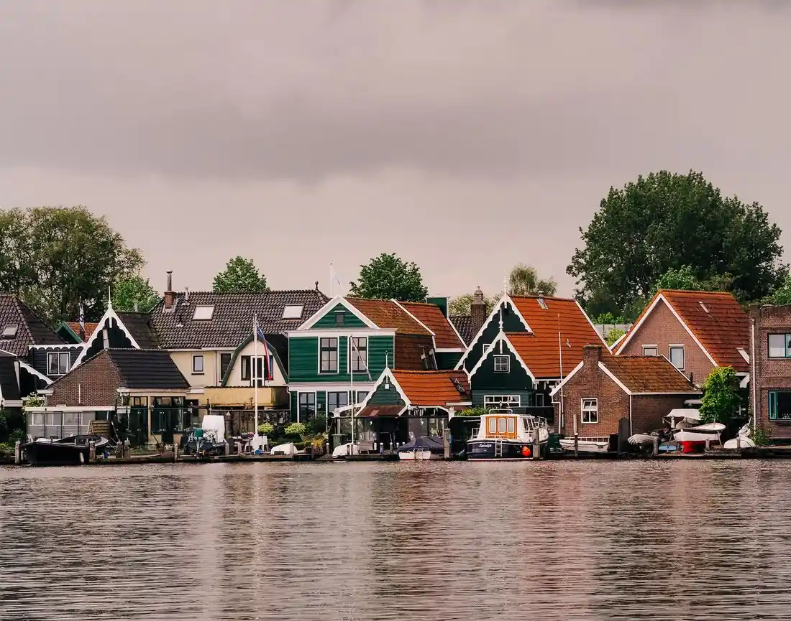

Strong agreement
“The city should publish weekly water-quality readings for the harbour and the Mere.”
1 May 2026 00:00 – 30 June 2026 23:59
The Mere and the harbour shape daily life in Westmere — for swimmers, fishers, dog-walkers and the boats that work the quayside. We want to know where you agree and where you don't. Vote on the statements below, then add your own.
 A resident wrote:
A resident wrote:
The west quay should be reserved for swimming and paddling in summer, with motorboats kept to the main channel.
Is something about the harbour or the Mere missing from the conversation? Add it below — one statement at a time, so others can vote on it.
Polis is powered by support from people like you. Contribute here.
Based on 1,204 votes from across the Harbour district and beyond.
After three weeks, a clear common ground is forming around cleaner water and shared use of the quayside — while boat traffic on the Mere remains the most divisive question.
“The city should publish weekly water-quality readings for the harbour and the Mere.”

“A supervised swimming spot at the west quay would be good for the neighbourhood in summer.”
“Motorboats should be banned from the inner harbour between June and September.”

The statements with the broadest agreement go forward to the Harbour Clean-up morning on 16 July and into the city's harbour water-quality plan. Where Westmere is divided, the engagement team will host a follow-up session to understand why. — Westmere City, Engagement team.